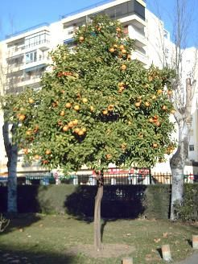
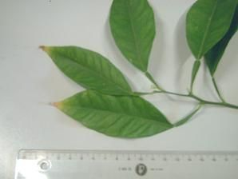

|
Citrus x aurantium
L., Sp. Pl. 783
(1753)
Citrus maxima x C. reticulata |
Rutáceas Dicotiledóneas |
| Naranjo amargo | Árbol o arbusto perennifolio |
|
Árbol perennifolio, de
3-7 m de altura, aunque puede alcanzar hasta 10 m (1);
de copa más o menos esférica; corteza de color verde
grisáceo; ramas con espinas axilares, largas y
punzantes.
Hojas alternas, simples, de 5 a 16 cm,
oblongo-elípticas; peciolo anchamente alado; limbo 6-11
x 2-7 cm, muy finamente crenado, de color verde
brillante.
Flores hermafroditas. de 2 cm de diámetro,
solitarias, o en grupos axilares, aromáticas y
nectaríferas; cáliz dentado, con 5 sépalos, de color
verde claro; corola con 5 pétalos blancos; androceo
poliándrico; ovario súpero, con 4-5 carpelos
soldados; florece en Marzo-Abril.
Fruto de tipo hesperidio (variedad de baya), de
7-11 cm de diámetro, de forma globosa, de color naranja
intenso en la madurez, con 10 a 12 gajos fáciles de
separar y pulpa muy ácida. |
 Foto: María Pineda Roibas, 2005 |
|  Foto: María Pineda Roibas, 2005 |
Observaciones:
El
nombre genérico, citrus,
deriva del griego kitros,
con el que se designaba a algunos
cítricos. El específico, aurantium, es latino y alude
al color dorado de sus frutos.
Con
las hojas se prepara una infusión de propiedades
estomáticas y ligeramente sedantes. La corteza, en
forma de cocimiento, tiene propiedades tónicas. De las
flores frescas se obtiene el agua destilada de azahar
o agua del Carmen. Con las naranjas amargas se
preparan mermeladas.
|
|
Área de origen.- Originado
en el sur de China por hibridación. Se afirma que fueron
los árabes los que lo extendieron desde la India a
Siria, Palestina y al resto del Mediterráneo. Los
califas de Córdoba (s IX-X) dieron al naranjo amargo el
carácter de planta ornamental por excelencia,
plantándolo en las calles, jardines y patios privados y
de las mezquitas. Por ejemplo, el Patio de los Naranjos
de la Mezquita de Córdoba, el Patio de los Naranjos en
la Catedral de Sevilla, los Jardines del Alcázar de
Sevilla, y otros. |
|
| Uso en el campus: 41 ejemplares, la mayoría formando alineaciones en el parking de la E.T.S.I. Informática. | Localización:
Facultad
de Química (un ejemplar)
E.
T. S. de Ingeniería Informática (40
ejemplares)
|
| (1) A . M. Negrillo Galindo, J. M. García Montes y C. Fernández Lopéz. Árboles y arbustos de los jardínes de la ciudad de Granada. | |
| María Pineda Roibas (XII/2005) &
Carlos Romero Zarco (2006) Versión 2: C.R.Z. (2026) |
|